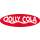

Om Os
Jolly har en historie der strækker sig helt tilbage til 1959. Vi er stolte repræsentanter for danskerne og alt hvad vores skønne samfund har at byde på!
En ægte dansk original
Vi har alle dage været stolte af at repræsentere danskerne som et af de førende danske sodavandsbrands. I den forbindelse har vi igangsat en konkurrence der netop omhandler den danske stolthedsfølelse!
Rebranding
Selvom Jolly Cola er den velkendte klassiker som den nu engang er blev det i 2020 besluttet, at brandet skulle genopfindes. Dette skulle gøre igennem opdatering af etiket, farvepalette og markedsføring. Hos Jolly Cola kan vi lide at følge med tiden og vil derfor hele tiden sørge for at appelere til vores kunder.